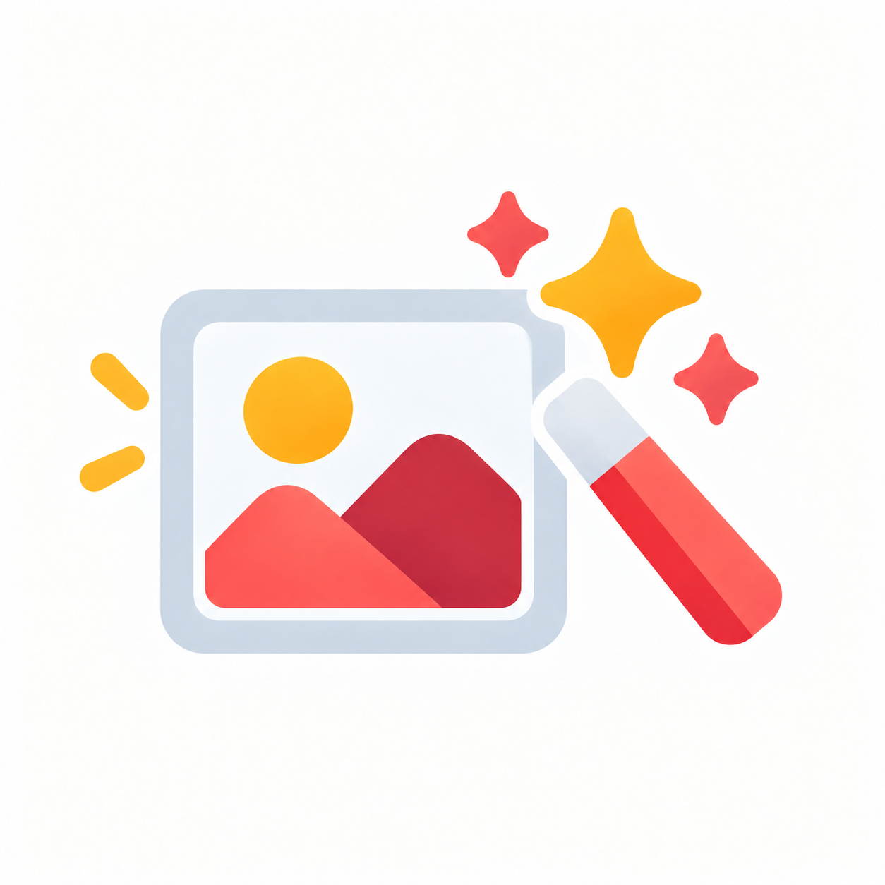

Du behöver inte börja från början. Har du redan bilder och vill skapa video? Gå direkt till Google Vids. Behöver du bara färger? Börja där.

Skriv instruktioner till en AI-agent
Bygg instruktionen med uppgift, input, kunskap, regler och output.
GuideÖppna →
Bygg en agent i Microsoft Copilot
Följ skärmbilderna och skapa ett första konkret exempel.
GuideÖppna →
Planera innehåll med AI
Välj mellan video eller bilder och få en enkel plan att börja från.
GuideÖppna →



Skapa bilder som hör ihop
Använd ett visuellt recept och en referensbild för mer konsekventa resultat.
GuideÖppna →